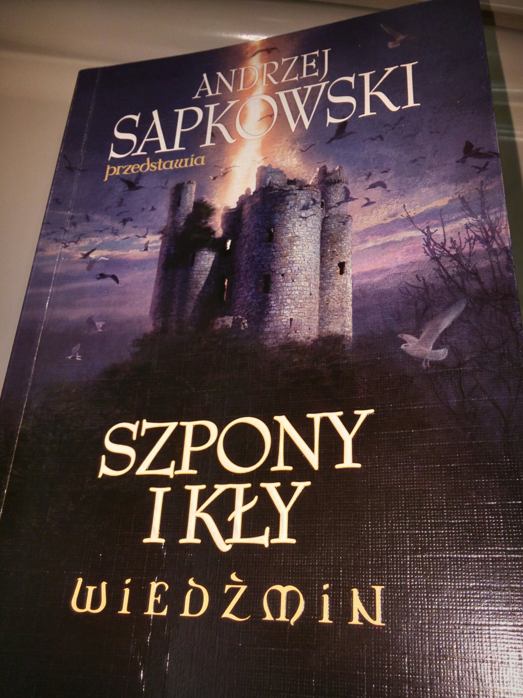

Poznaj Rambo kambo jambo tarara wonsza leszego malego scierwojada
cos o projekcie lalalalalalaalalllal

Dlaczego czarni wygrali wojne?
Postac emhyra dla ciekawych
"Droga, z której się nie wraca" (opowiadanie) ...
"Ziarno prawdy" (opowiadanie) ...
"Mniejsze zło" (opowiadanie) ...
"Kraniec świata" (opowiadanie) ...
"Ostatnie życzenie" (opowiadanie) ...
"Sezon burz" (powieść) ...
"Kwestia ceny" (opowiadanie) ...
"Wiedźmin" (opowiadanie)